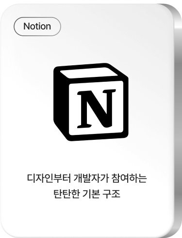
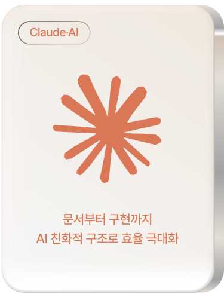
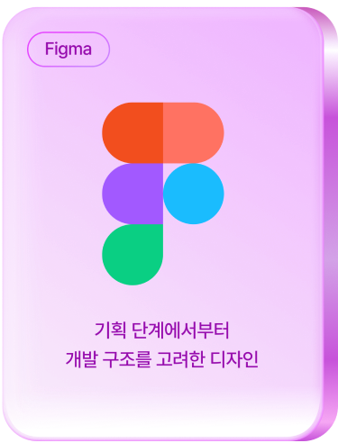
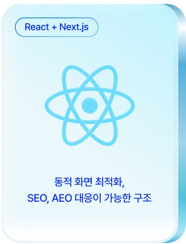
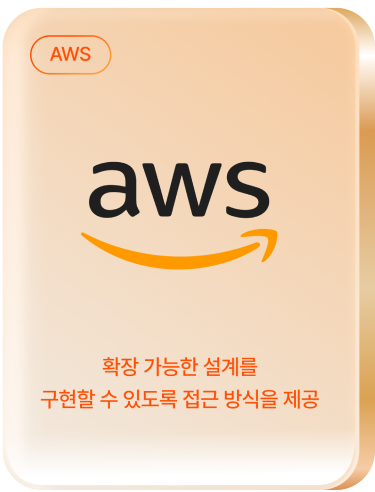
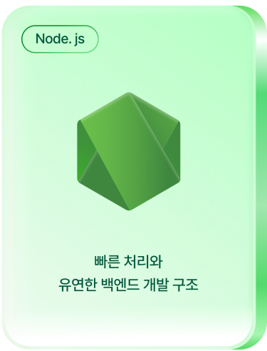

뷰노
의료 AI 영상판독 솔루션 반응형 홈페이지
오늘의 진료를 넘어 내일의 회복으로.
리커너스는 일회성 진료에 그치지 않고, 장기적인 회복과 관리까지 고려한 단단한 헬스케어 아키텍처를 구축합니다.
많은 케어 프로그램은 초기에는 비슷해 보입니다.
하지만 시간이 지나 재발 관리가 필요해지고, 복약이 늘고, 담당 의료진이 바뀌고,
돌봄 범위가 확장되기 시작하면 처음 설계한 케어 구조의 차이가 드러납니다.
리커너스는 헬스케어가 ‘진료’에서 끝나는 일이 아니라, 환자가 계속 관리받고
회복해야 하는 생애 건강 자산으로 바라봅니다.






단순히 화면을 빠르게 만드는 것이 아닌 회복과 확장,
돌봄까지 이어질 수 있는 구조를 설계합니다.
의료 AI 영상판독 솔루션 반응형 홈페이지
퇴원 후 재택 모니터링 플랫폼
재활 치료 예약 반응형 홈페이지
비대면 진료 모바일 어플리케이션
정신건강의학과의원 반응형 홈페이지
만성질환 복약관리 플랫폼
시니어 헬스케어 브랜딩
리커너스의 케어 프로젝트는 Notion을 통해 체계적으로 관리합니다. 진료 기록과 의사결정, 케어 플랜 변경 요청을 기록하여 회복 여정의 흐름을 명확하게 유지합니다. 프로젝트에 소요되는 시간은 분 단위로 관리되며, 정확한 환자 데이터 파악을 바탕으로 효율적인 케어 퍼포먼스를 만들어내며 수평적인 소통 문화는 다양한 임상 아이디어를 이끌어내고, 케어 결과물의 완성도를 높이는 기반이 됩니다.
홈페이지는 의료기관의 신뢰를 표현해야 하고, 서비스는 케어 방향성과 가치를 함께 담아야 합니다. 브랜드부터 진료 경험까지의 이해 없이 진행되는 개발은 단편적인 결과물을 만들 수는 있지만, 케어의 핵심 가치를 제대로 전달하기 어렵습니다. 리커너스는 마케팅과 브랜딩, 환자 콘텐츠, 운영까지 함께 이해하고 고려하며, 브랜드의 본질을 담은 헬스케어 서비스를 구현합니다.
좋은 헬스케어 서비스는 화면만으로 완성되지 않습니다. 속도와 보안, 개인정보 보호, 확장성, 운영 안정성까지 함께 고려되어야 합니다. 리커너스는 AWS와 ECS 기반의 클라우드 환경을 구축하여 민감한 환자 데이터도 안정적인 성능과 운영 환경으로 지원합니다. 기술과 운영을 함께 고려한 설계를 바탕으로, 안정적인 케어 경험과 지속 가능한 운영을 지원합니다.